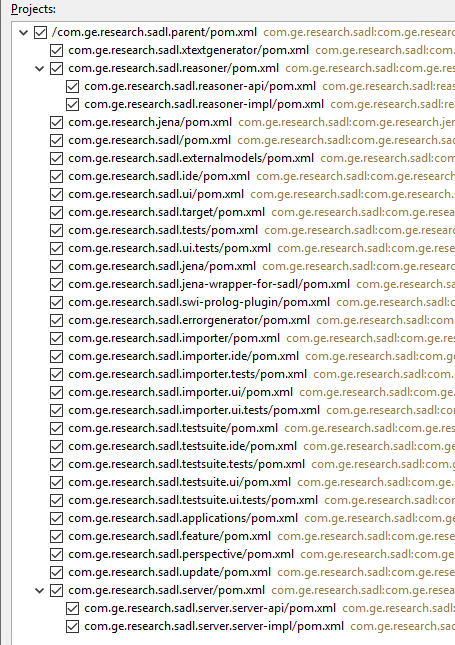
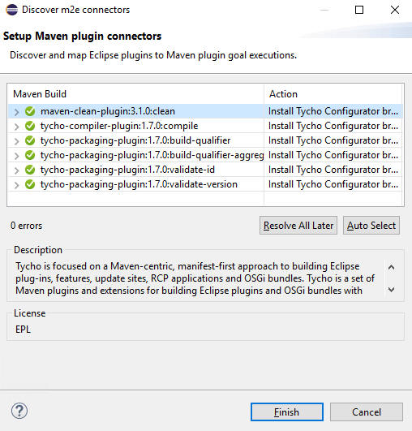
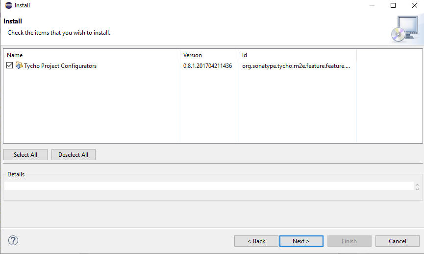
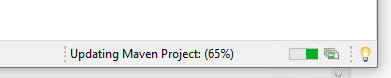
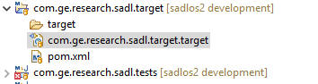
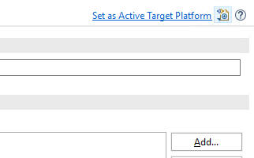
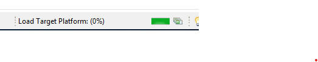

SADL Version 3 Development Environment Setup
Last revised
07/28/2020
by A. W.
Crapo
To create a development environment for SADL Version 3, do the following.
Order matters for some of the steps.
Pre-requisites
- Maven Version 3.5 or later should be installed on your computer.
- Eclipse IDE for DSL Developers, Version 2020-03 or later, should be
installed on your computer.
- A Java JDK Version 8 or later set as the default JRE in Eclipse
Setup
- Pull the SADL repository from github.com
- Change directory within the repository to ".../sadlos2/sadl3/com.ge.research.sadl.parent"
- Run a Maven build
- mvn install -U
- No errors should occur.
- Start Eclipse
- It may be helpful to have an Eclipse workspace whose path is not too
long.
- Import the SADL V3 projects into Eclipse as Maven projects
- File -> Import... ->Maven -> Existing Maven Projects
- Set the Root Directory by browse to ".../sadlos2/sadl3" in the git
reposotiry created in step 1
- Click Next
- Select all of the projects (only the com.ge.research.sadl.server
projects at the bottom of the list can be omitted)
- 
- Click Finish
- If you are asked about setting up Maven plugin connectors, click Finsish
- 
- Similarly, if asked about installing Tycho Project Configurators, do so
by clicking Next, accept the license, and click Finish.
- 
- You will be warned that the software is unsigned.
- You may be prompted to restart Eclipse
- Eclipse will now work for some time to complete the import of the Maven
projects. Allow it to continue until complete.
- 
- If necessary, close the Welcome screen to be able to see the imported
projects in the Package Explorer. At this point there will be errors.
- Set the target platform:
- In the project com.ge.research.sadl.target, open the file
com.ge.research.sadl.target.target.
- 
- Click on Set as the Active Target Platform
- 
- Allow the process to complete
- 
- At this point you should have an Eclipse plug-in development environment
without any errors.
- To run SADL from the development environment:
- Right-click on any project in the Project Explorer
- Select Run As -> Eclipse Application or Debug As -> Eclipse Application
- Note that running a Maven build (see steps 2 and 3 above) will, if
successful, create an Eclipse update file in project
com.ge.research.sadl.update. target/com.ge.research.sadl.update-xxxxxx.zip.
This can be uploaded to github.com to create a new release.